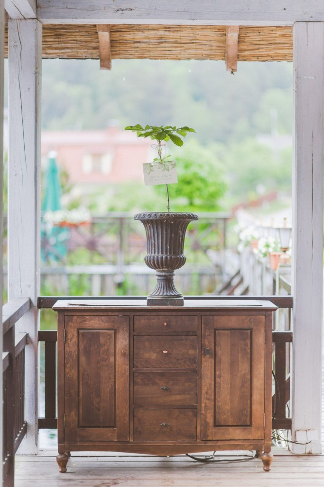

Welcome to kanceliarija
Seimo kanceliarija gertuvėms ir puodeliams įsigyti ketina skirti iki keliasdešimt tūkstančių eurų - DELFI
2020.10.29 06:40
Spalio 29 d., ketvirtadienis | Vilnius 11 Kaunas 11 Klaipėda 9 Šiauliai 9 Panevėžys 10 Alytus 10 Nida 9 Raseiniai 9 Utena 11 Mažeikiai 9 Biržai 10 Kėdainiai 11 Kiti miestai Paieška | Pranešti naujieną | LT RU EN | Reklama Kontaktai | Statistika | + Apie Delfi plius Prisijungti Naujausios Skaitomiausios Lietuvoje Sportas Orai Kriminalai Užsienyje Veidai Horoskopai Gyvenimas Mokslas Verslas Daugiau Sveikata Kultūra Auto M360 Politiko akimis Jaunimas Pilietis Nuomonių ringas Multimedija Teisė Medijos Karas Propaganda PT Melo detektorius Demaskuok Ačiū už pamokas Temos | Delfi Video
Naujienos
Naujausios Skaitomiausios Lietuvoje Sportas Kriminalai Užsienyje Veidai GyvenimasVerslas Mokslas Kultūra Sveikata Auto Pilietis Miestai M360 Politiko akimis
Delfi Video
Tiesioginės transliacijos Delfi Diena Delfi Dėmesio centre LaidosNaudinga
Orai Horoskopai Receptai TV Programa Valiutų kursaiDelfi projektai
Multimedija Idėja Lietuvai Kablys Smalsūs EP Atsakingas požiūris Atgal į gyvenimąDelfi kanalai
Agro Būstas Moterys Šeima Kelionės Grynas Stilius Maistas Letena Karjera Bored Panda Sek DelfiMobilusis Delfi
Vilnius Kaunas Klaipėda Šiauliai Daugiau Panevėžys Alytus Marijampolė Utena Telšiai Tauragė Palanga Rinkimai 2020 Agro Būstas Moterys Šeima Kelionės Grynas Stilius Maistas Letena Bloomberg Karjera DELFI Žinios Dienos naujienos Lietuvoje
Seimo kanceliarija gertuvėms ir puodeliams įsigyti ketina skirti iki keliasdešimt tūkstančių eurų
(39) ELTA 2020 m. spalio 15 d. 13:47Nuorodos kopijavimas
Seimo kanceliarija gertuvėms ir puodeliams įsigyti ketina skirti iki keliasdešimt tūkstančių eurų
Nuoroda nukopijuota
aA Seimo kanceliarija numato įsigyti kelis tūkstančius puodelių su lėkštutėmis ir stiklinių, taip pat gertuvių ir termosinių puodelių. © DELFI / Andrius UfartasKaip teigiama Centriniame viešųjų pirkimų portale (CVPP) pateiktuose dokumentuose, planuojama įsigyti 1500 vnt. gertuvių, 1400 vnt. termosinių puodelių ir 4500 vnt. puodelių su lėkštutėmis ir stiklinių.
Gertuvės bus perkamos priklausant nuo poreikio ir gauto finansavimo, neviršijant 16 tūkst. eurų su PVM , termosiniai puodeliai – neviršijant 15 tūkst. eurų, stiklinės ir puodeliai – neviršijant 30 tūkst. eurų.
Galutinė kaina, kuri bus sumokėta tiekėjui, priklausys nuo užsakytų ir pateiktų prekių kiekio.
Pasiūlymų ar prašymų dalyvauti pirkime priėmimo terminas – spalio 22 diena. Bus renkamasi iš ekonomiškai naudingiausio pasiūlymo.
565 PasidalinoNuorodos kopijavimas
Seimo kanceliarija gertuvėms ir puodeliams įsigyti ketina skirti iki keliasdešimt tūkstančių eurų
Nuoroda nukopijuota
Be raštiško ELTA sutikimo šios naujienos tekstą kopijuoti draudžiama. | Populiariausi straipsniai ir video Įvertink šį straipsnį Norėdami tobulėti, suteikiame jums galimybę įvertinti skaitomą DELFI turinį. ( 9 žmonės įvertino) 1.4444Top naujienos
LietuvojeDramatiškos nuotaikos Europoje: ateinančias savaites situacija blogės, ir ji visiškai kitokia, nei buvo pavasarį vakcina nėra stebuklas, Kalėdoms gerų naujienų neplanuojama (124)
Naujai koronaviruso bangai skandinant Europą, į pandemijos suvaldymą vis aktyviau bando įsitraukti...
VerslasAntrą bangą išgyvenantys viešbučiai imasi visų išlikimo taktikų: siūlo bekontaktes registracijas ir net prisuka šildymą (32)
Pirmajai koronaviuso bangai smarkiai smogus viešbučių sektoriui, antrosios jie gali ir neatlaikyti,...
BūstasLietuvos jaunimo požiūris į nuosavą būstą keičiasi: tai vakarietiško mąstymo ar finansinių sunkumų pasekmė? (27)
Vienas pagrindinių NT rinkos variklių – jaunas žmogus, kuris perka pirmąjį savo būstą arba...
VerslasNegriežta Švedijos COVID politika nežada nieko gera pramonės sektoriui (17)
Švedijos strategiją kovoje su COVID-19 palaiko ribojamųjų karantino priemonių priešininkai,...
MokslasKartą lietuviai jau išgyveno pandemiją: tais metais tauta ėjo „išmirimo keliu“ (168) 119
Gyvenimas pandemijos sąlygomis nėra saldus: tą galėtų paliudyti ne tik šių dienų lietuviai,...
VeidaiIrūna Puzaraitė ryžosi trečiai tatuiruotei ir tai dar ne pabaiga: šis simbolis mane lydėjo per daug kartų, kad jį ignoruočiau (101) 101
Daili suknelė, aukštakulniai ir kruopštus makiažas – tokiu įvaizdžiu pasipuošusią Irūną...
Agnė Vareikaitė | D+ nariamsPrieš ir po: 130 kv. metrų būstą savo rankomis pavertė kai kuo ypatingu
Lietuvę Miglę Rijkhoek, gyvenančią Nyderlanduose, daugelis atrado instagrame . Ši moteris žavi...
SveikataTreneris Pauliukevičius pasakė, kas geriausiai tirpdo kūno riebalus: nereikės nė treniruoklio (10)
Kaip manote, kurie pratimai efektyviausiai degina jūsų kalorijas? Treneris Andrius Pauliukevičius...
Atsakingas požiūrisUšackas: nutiesėme tiltą iki Baltarusijos sienos, tačiau nepavyko jo atverti (5)
Prieš daugiau nei du mėnesius prasidėjusi politinė krizė Baltarusijoje tapo iššūkiu ir ten...
Gyvenimas13 daiktų namuose, su kuriais patartina dabar pat atsisveikinti (2)
Dažnai nė nepajuntame, kaip apaugame nereikalingais daiktais. Kalnai čekių, nereikalingų...
| Maža didelių žinių kaina Sekite DELFI REKLAMA KONTAKTAI PRIVATUMAS KARJERA en.delfi.lt ru.delfi.lt pl.delfi.lt delfi.ee rus.delfi.ee delfi.lv ru.delfi.lv UAB DELFI Gynėjų g. 16, 01109 Vilnius +37052045400 info@delfi.lt © 1999-2020 DELFI. Visos teisės saugomos .